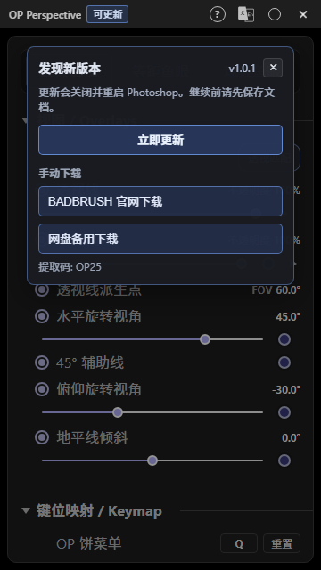

经典透视
控制 VP_X / VP_Y / VP_Z、地平线、FOV 和 45° 辅助线，适合常规场景透视。
Photoshop 透视辅助与空间参考工具
在 Photoshop 中创建透视辅助线、鱼眼参考网格、三维 Object 参考结构，并将可见辅助线或 Object 写入 Photoshop 图层。

功能概览
控制 VP_X / VP_Y / VP_Z、地平线、FOV 和 45° 辅助线，适合常规场景透视。
支持等距鱼眼和球极鱼眼，用于广角、曲面空间和夸张镜头参考。
创建 Quad、Circle、Cube、Cylinder、Sphere、Character，并用移动、旋转、缩放调整空间关系。
把当前透视辅助线、选中 Object 或所有可见 Object 写入 Photoshop 透明图层。
Installation
如果 Photoshop 启动时关闭或卡在启动画面，先安装或修复 Microsoft Visual C++ 2015-2022 Redistributable x64，然后重启 Windows 再测试。
License
未激活时，面板只显示邮箱、激活码和 14 天试用入口。激活或开始试用后，完整控制面板会显示。
User Guide
切换 Classic / Equidistant FishEye / Stereographic FishEye，控制透视线、Object、FOV、旋转视角、地平线和快捷键。
默认使用 Q 打开，用于创建 Object、进入 Edit Mode、切换结构相交线、控制 Object 显示和写入 Photoshop 图层。
在 Edit Mode 中使用 G / R / S 移动、旋转、缩放，使用 X / Y / Z 约束轴向，使用 Shift+D 复制 Object。
透视辅助线、选中 Object、所有可见 Object 都可以写入 Photoshop 透明图层。写入内容按当前 Overlay 可见结果生成。
安装可选 Blender add-on 后，可连接 OP Perspective、同步相机参考，并把 Blender Final Render 发送到 Photoshop 图层。
Q OP Pie Menu · G Move · R Rotate · S Scale · Alt+Z X-Ray · Ctrl+Z Undo
Updates
有新版本时，控制面板标题栏会显示“可更新”。点击后可选择自动更新或手动下载来源。更新前请保存 Photoshop 文档。
Download
FAQ
按 Ctrl+F12 可以重新打开 OP Perspective 面板。
不会。写入功能会创建新的透明图层，不会直接覆盖原始图层。
优先修复 Microsoft Visual C++ 2015-2022 Redistributable x64；如果仍失败，再记录 Windows 事件查看器中的错误模块并联系支持。
OP Perspective 提供 14 天试用期。试用需要联网并绑定邮箱。